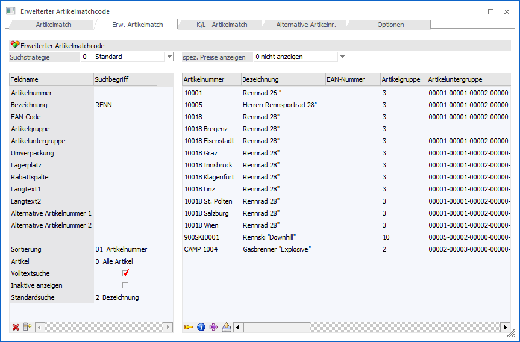
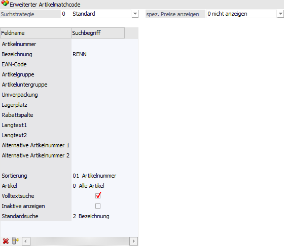
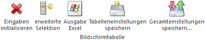
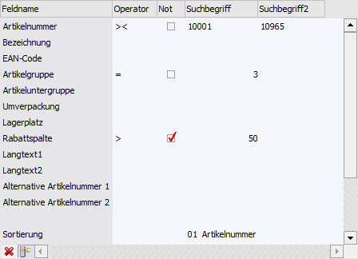
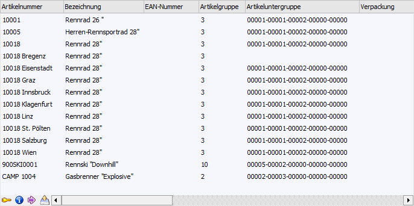

In diesem Register kann aufgrund einer zuvor angelegten Suchstrategie nach Artikeln gesucht werden. Die Spalten in der Suchergebnistabelle werden dabei ebenfalls über die Suchstrategie definiert.
Hinweis
Die unterschiedlichen Suchstrategien werden in dem Programm "Vorlagen Anlage - Suchstrategien" (WinLine START - Vorlagen - Vorlagen Anlage - Suchstrategien - Stammdaten Artikel) definiert.

In dem erweiterten Artikelmatchcode können neben Artikelnummer und Artikelbezeichnung nach weiteren Kriterien wie EAN-Code, Artikelgruppe, Lagerplatz, etc. gesucht werden. In welchen Feldern gesucht werden soll, kann über die Suchstrategie (Vorlagen) entschieden werden.
Hinweis
In dem erweiterten Artikelmatchcode werden die Sucheinstellungen aus den Ausprägungsoptionen ((WinLine FAKT - Stammdaten - Ausprägungen - Ausprägungsoptionen - Register "Details" - Unterregister "Suchen" - Option "Artikelmatchcode") nicht unterstützt.
Selektionsbereich

In diesem Bereich werden Einstellungen für die Suche vorgenommen und die Suchbegriffe hinterlegt. Hierbei werden alle Einstellungen (Suchstrategie, Sortierung, Artikel, Volltextsuche, Inaktive Artikel, Standardsuche und spez. Preise anzeigen) benutzerspezifisch gespeichert.
Ø Suchstrategie
An dieser Stelle kann eine Suchstrategie ausgewählt werden. Grundsätzlich steht die Strategie "0 - Standard" zur Verfügung, mit welcher in folgenden Feldern gesucht werden kann:
ü Artikelnummer
ü Bezeichnung
ü EAN-Code
ü Artikelgruppe
ü Artikeluntergruppe
ü Umverpackung
ü Lagerort
ü Rabattspalte
ü Langtext 1
ü Langtext 2
ü Alternative Artikelnummer 1
ü Alternative Artikelnummer 2
Achtung
Es kann in dem Feld "Artikelnummer" nur über die originale Artikelnummer gesucht werden. Die Ausprägungsartikelnummer wird zurzeit noch nicht unterstützt.
Hinweis
Eigene Suchstrategien können über das Programm "Vorlagen Anlage - Suchstrategien" (WinLine START - Vorlagen - Vorlagen Anlage - Suchstrategien - Stammdaten Artikel) definiert werden. Neben der grundsätzlichen Auswahl der Datenfelder kann dort auch eingestellt werden, nach welchen Feldern gesucht bzw. welche Felder in der Suchergebnistabelle angezeigt werden sollen.
Unabhängig von der gewählten Suchstrategie können immer folgende Einstellungen vorgenommen werden:
Ø Sortierung
Aus der Auswahlliste kann gewählt werden, nach welchem Kriterium die Sortierung in der Ergebnistabelle erfolgen soll. Dabei können alle Werte des Suchkriteriums verwendet werden, solange der Wert direkt aus dem Artikelstamm kommt.
Hinweis
Wenn eine Sortierung nach z.B. einer Eigenschaft gewünscht ist, dann muss dieses direkt über die Suchergebnistabelle (Klick auf die Spaltenüberschrift) erfolgen.
Ø Artikel
An dieser Stelle kann die Artikelart definiert werden, welche bei der Suche berücksichtigt werden soll. Zur Auswahl stehen folgende Möglichkeiten:
ü 0 - Alle Artikel
ü 1 - Hauptartikel ohne Ausprägung
ü 2 - Hauptartikel mit Ausprägung
ü 3 - Ausprägungen
ü 4 - Alle Hauptartikel
Ø Volltextsuche
Standardmäßig erfolgt die Suche linksbündig. Durch Aktivierung der Option "Volltextsuche" wird der Suchbegriff innerhalb des gesamten Wertes gesucht.
Beispiel
Es wird im Namen der Suchbegriff "rad" eingegeben. Erfolgt die Suche ohne Volltext, dann wird der Suchbegriff "rad%" übergeben. Wird die Suche hingegen mit Volltext durchgeführt, dann wird der Suchbegriff "%rad%" übergeben.
Ø Inaktive anzeigen
Durch Aktivierung dieser Option werden auch inaktive Artikel in der Ergebnistabelle angezeigt.
Ø Standardsuche
An dieser Stelle kann definiert werden, in welches Feld der Suchbegriff aus dem "Hauptfenster" (nach Drücken der Taste F9) in den erweiterten Artikelmatchcode übernommen werden soll. Hierfür stehen folgende Möglichkeiten zur Auswahl:
ü 1 - Artikelnummer
ü 2 - Bezeichnung
Ø spez. Preise anzeigen
Diese Einstellung steht nur zur Verfügung, wenn der Matchcode aus der Belegerfassung heraus geöffnet wurde und dient zur Anzeige von Gruppen- bzw. Kontenspezifischen Preisen.
ü 0 - nicht anzeigen
Es werden
keine Hinweise auf Gruppen- bzw. Kontenspezifische Preise ausgewiesen.
ü 1 - (nur allg. Match: Symbol in
der Tabelle anzeigen)
Diese Auswahl wird nur im Register "Artikelmatch"
unterstützt.
ü 2 - Preise in der Infoliste
anzeigen
Es werden in der optional zu aktivierenden Artikelinfo alle aktuell
gültigen Preislisteneinträge (für das Personenkonto) angezeigt.
Hinweis
Aus der Artikelinfo heraus kann
direkt zu dem Preis im Artikelstamm gewechselt werden (1.) oder der Artikel samt
des gewünschten Preises in die Belegerfassung übernommen werden
(2.).
Tabellenbuttons "Selektionsbereich"

Ø Eingaben initialisieren
Wenn dieser Button angewählt wird, dann werden alle vorgenommen Eingaben in den selbst definierten Eingabefeldern entfernt.
Ø erweiterte Selektion
Wird dieser Button angeklickt, dann kann in den Feldern des Selektionsbereichs eine zusätzliche Selektion vorgenommen werden, die von der Funktionalität dem Filter ähnelt.
Hinweis
Die "erweiterte Selektion" bleibt so lange erhalten, bis die Option wieder deaktiviert wird.

Ø Operator
Aus der Auswahllistbox kann zwischen folgenden Operatoren gewählt werden:
|
Operator |
Bezeichnung |
Bedeutung |
|
>< |
Von / Bis |
Der Bereich wird mit einer Unter- und Obergrenze eingeschränkt |
|
= |
Gleich |
Variablen, deren Wert mit der Bedingung genau übereinstimmt |
|
<> |
Ungleich |
Variablen, deren Wert nicht dieser Bedingung unterliegt |
|
> |
Größer |
Variablen, deren Wert größer ist als jener in der Bedingung |
|
< |
Kleiner |
Variablen, deren Wert kleiner ist als jener in der Bedingung |
|
>= |
GrößerGleich |
Variablen, deren Wert größer ist als jener in der Bedingung oder mindestens gleich |
|
<= |
KleinerGleich |
Variablen, deren Wert kleiner ist als jener in der Bedingung oder höchstens gleich |
|
% |
Wie |
Nur wenn die Bedingung im Wert enthalten ist Beispiele ü Eingabe "Sport%"
ü Eingabe "%sport%" |
|
=0 |
IS NULL |
Variablen, deren Wert gleich NULL ist (NULL bedeutet, dass das Feld in der Datenbank keinen Wert - auch nicht 0 - enthält). |
|
IN |
manuelle Auflistung |
Mit dieser Funktion kann eine Reihe von Werten abgefragt werden, die nicht unmittelbar hintereinander kommen (im Gegensatz zu "Von - Bis"). Damit können z.B. die Artikelgruppen 3, 7 und 12 oder die Kundengruppen 4, 10 und 47 abgefragt werden. Das Trennzeichen für die Werte ist das Semikolon ";". |
Hinweis
Bei der Eigenschaft "Mehrfachauswahl" gibt es folgende Besonderheiten bei den nachfolgenden Operatoren:
ü % - Wie
Es werden alle Artikel
angezeigt, bei denen einer der ausgewählten Werte zugeordnet wurde.
Beispiel
In der
Mehrfachauswahl-Eigenschaft "Informationsmaterial" gibt es die definierten Werte
"Produktblatt", "Montageanleitung", "Zubehörübersicht" und "Preisliste".
Bei
einer Suche mit dem Operator "% - Wie" und der Auswahl "Produktblatt" und
"Montageanleitung" würden alle Artikel erscheinen, bei denen zumindest
"Produktblatt" oder "Montageanleitung" zugeordnet ist.
ü IN - manuelle Auflistung
Es
werden alle Artikel angezeigt, bei denen alle ausgewählten Werte zugeordnet
wurden. Im Gegensatz zu dem Operator "= - Gleich" dürfen aber zusätzlich noch
weitere Werte bei den Artikeln hinterlegt sein.
Beispiel
In der
Mehrfachauswahl-Eigenschaft "Informationsmaterial" gibt es die definierten Werte
"Produktblatt", "Montageanleitung", "Zubehörübersicht" und "Preisliste".
Bei
einer Suche mit dem Operator "IN - Manuelle Auflistung" und der Auswahl
"Produktblatt" und "Montageanleitung" würden alle Artikel erscheinen, bei denen
zumindest "Produktblatt" und "Montageanleitung" zugeordnet
sind.
Ø Not
Ist diese Checkbox aktiv, dann wird die Bedingung verneint. Das bedeutet, es werden nur Datensätze ausgegeben, die außerhalb des selektierten Bereichs liegen.
Ø Suchbegriff / Suchbegriff 2
In diesen Feldern können die Suchbegriffe gemäß dem Operator eingetragen werden. Der Suchbegriff 2 steht nur beim Operator "Von - Bis" zur Verfügung.
Hinweis
Es werden nur jene Artikel gefunden, bei denen alle eingegebenen Kriterien übereinstimmen.
Ø Ausgabe Excel
Durch Anwahl des Buttons "Ausgabe Excel" wird der Inhalt der Tabelle an Microsoft Excel übergeben.
Ø Tabelleneinstellungen speichern
Die Spalten einer Tabelle können grundsätzlich an beliebige Positionen verschoben, bzw. in der Breite entsprechend angepasst werden. Durch Anwahl des Buttons "Tabelleneinstellungen speichern" werden die Einstellungen benutzerspezifisch gespeichert und bei dem nächsten Aufruf des Programmpunktes wieder vorgeschlagen.
Ø Gesamteinstellungen speichern
Im Gegensatz zu "Tabelleneinstellungen speichern" können mit "Gesamteinstellungen speichern" mehrere Tabellenaufbauten gespeichert und nach Wunsch geladen werden. Zusätzlich werden Sonderfunktionen der Tabelle (z.B. "Spalte gruppieren") ebenfalls bei der Speicherung bedacht.
Tabelle "Suchergebnis"

In der Tabelle werden nach Auslösen der Suche (Button "Anzeigen") die gefundenen Artikel (gemäß der verwendeten Suchstrategie) angezeigt. Per Doppelklick oder Enter-Taste kann der ausgewählte Artikel anschließend in das Ausgangsfenster übernommen werden.
Ø Optionale Spalten
Neben den Spalten, welche über die Suchstrategie definiert werden, können über das Kontextmenü der rechten Maustaste (Funktion "Spalten anzeigen / verstecken") jederzeit folgende Spalten hinzugefügt bzw. entfernt werden:
ü Zeilennr.
Es wird pro Datensatz
(Artikelzeile) eine aufsteigende Nummer angezeigt. Wenn der Fokus in der Spalte
liegt kann anschließend durch Eingabe der Nummer direkt zum Datensatz gewechselt
werden.
Hinweis
Wenn der Fokus in der Spalte liegt kann durch Anwahl der Taste F2 definiert werden, ob die Spalte "linksbündig", "zentriert" oder "rechtsbündig" angezeigt werden soll.
ü Lagerstand / Lagerstand2
Es
wird pro Artikelzeile der aktuelle Lagerstand angezeigt. Die Menge wird dabei
immer mit 2 Nachkommastellen ausgewiesen.
Hinweis
Die Spalten müssen bereits vor dem Auslösen der Suche in der Tabelle vorhanden sein.
ü Lagerwert
Es wird pro
Artikelzeile der aktuelle Lagerwert angezeigt. Der Betrag wird dabei immer mit 2
Nachkommastellen ausgewiesen.
Hinweis
Die Spalten "Lagenstand / Lagerstand2" und "Lagerwert" müssen bereits vor dem Auslösen der Suche in der Tabelle vorhanden sein.
Tabellenbuttons "Suchergebnis"

Ø Artikel freigeben
Bei Anwahl des Buttons "Freigeben" wird der Programmbereich "Freigabe" geöffnet, in welchem die Freigabe des markierten Artikels geändert werden kann.
Ø Artikel-Detailinfo anzeigen
Durch Anklicken des Buttons "Artikel-Detailinfo anzeigen" wird die "Artikel-Detailinfo" geöffnet. In dieser werden detaillierte Lagerinformationen des markierten Artikels dargestellt.
Ø in Merkliste ablegen
Durch Anklicken des Buttons "in Merkliste ablegen" werden die zuvor selektiert Einträge in eine Merkliste / Kampagne übergeben.
Ø in Beleg übernehmen
Durch Anwahl dieses Buttons werden alle selektierten Artikelzeilen aus der Ergebnistabelle in die Belegerfassung übernommen. Neben der Anwahl des Buttons ist dieses auch per "STRG + Drag & Drop" möglich.
Hinweis
Diese Funktion steht in den folgenden Programmbereichen zur Verfügung:
ü Belege erfassen
ü Telesales
ü Kontrakt erfassen
ü Kontrakte abbuchen
Ø Ausgabe Excel
Durch Anwahl des Buttons "Ausgabe Excel" wird der Inhalt der Tabelle an Microsoft Excel übergeben.
Ø Tabelleneinstellungen speichern
Die Spalten einer Tabelle können grundsätzlich an beliebige Positionen verschoben, bzw. in der Breite entsprechend angepasst werden. Durch Anwahl des Buttons "Tabelleneinstellungen speichern" werden die Einstellungen benutzerspezifisch gespeichert und bei dem nächsten Aufruf des Programmpunktes wieder vorgeschlagen.
Ø Gesamteinstellungen speichern
Im Gegensatz zu "Tabelleneinstellungen speichern" können mit "Gesamteinstellungen speichern" mehrere Tabellenaufbauten gespeichert und nach Wunsch geladen werden. Zusätzlich werden Sonderfunktionen der Tabelle (z.B. "Spalte gruppieren") ebenfalls bei der Speicherung bedacht.